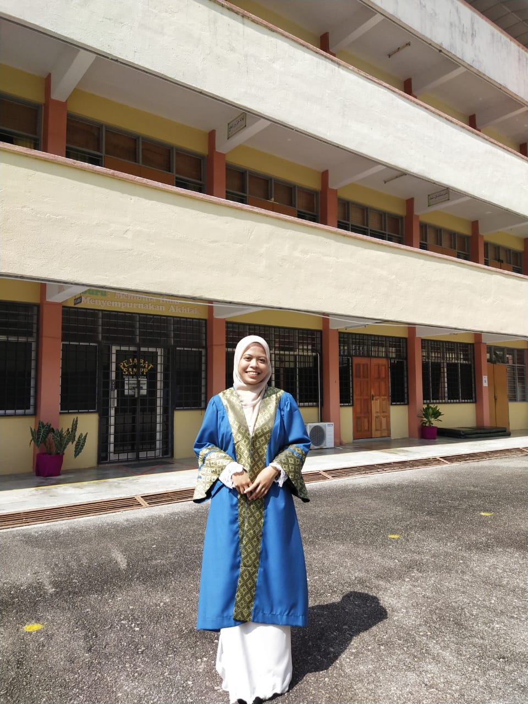
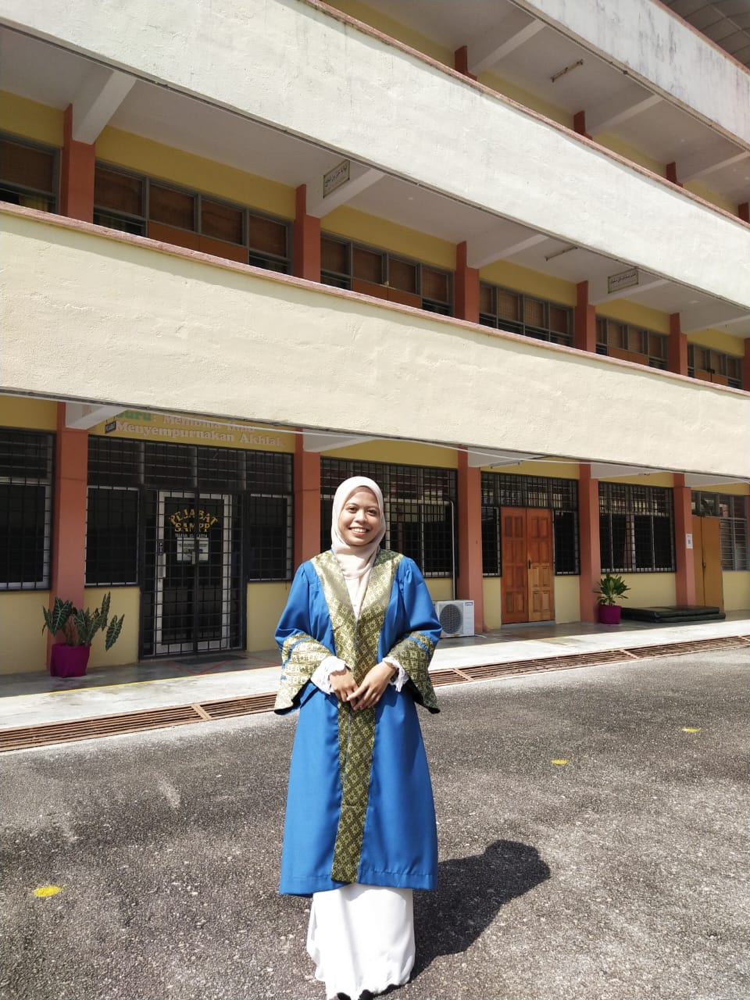
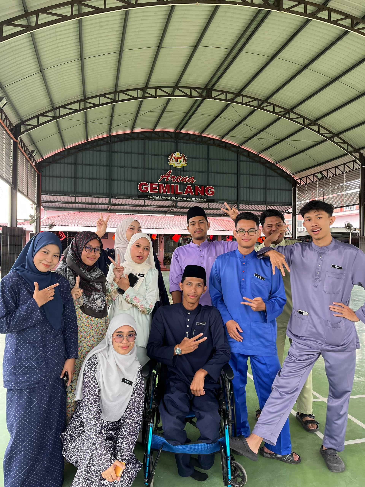
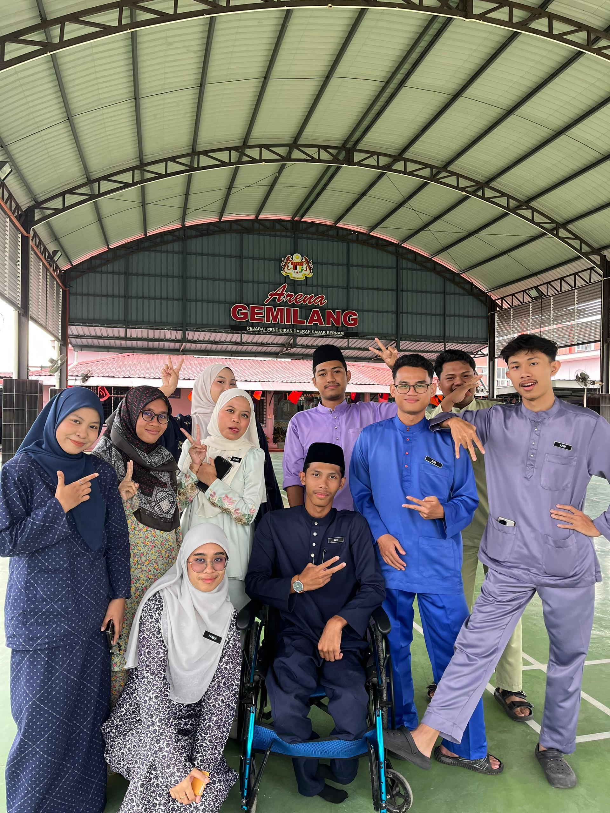

EDUCATION
I am a Diploma in Information Management student with a strong interest in records management, documentation, and digital content creation. Through my academic journey and industrial training experience, I have developed skills in organizing information, administrative support, and creative design. I am passionate about learning, self-growth, and turning ideas into meaningful digital work.
2023 – 2026
Diploma in Information Management (CDIM110)
Universiti Teknologi MARA (UiTM)Key Subjects Learned:
- Records Management
- Information Organization
- Electronic Publishing
- Database Management
Core Skills:
- Digital & Administrative Skills
- Information Archiving
- Systems Documentation
- Creative Content Design
2018 - 2022
Sijil Pelajaran Malaysia (SPM)
SAM PASIR PANJANG
Achieved 7A's in SPM
Recipient of Anugerah Pelajar Mithali
 

 
